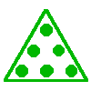
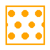

23-DE-12_Keksstapel


Der Roboter kann mehrere Kekse nach dem LIFO-Prinzip aufheben und wieder ablegen. LIFO steht für "Last In First Out". Für den Roboter bedeutet das: Den letzten Keks den er aufgehoben hat, legt er als ersten Keks wieder ab.
Der Roboter soll jeden Keks (,

,
) im passenden Behälter (, , ) ablegen.Hinweis: Der Roboter kann nicht wieder nach links gehen. Der Roboter kann mehrere Kekse auf einmal tragen.
Der Roboter soll jeden Keks (, , ) in einem passenden und noch leeren Behälter (, , ) ablegen.
Hinweis: Der Roboter kann mehrere Kekse auf einmal tragen.
Der Roboter soll jeden Keks (, , ) in einem passenden und noch leeren Behälter (, , ) ablegen.
Hinweis: Der Roboter kann mehrere Kekse auf einmal tragen.